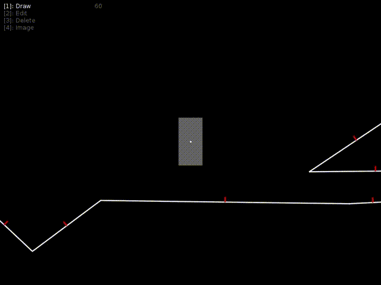

is a common problem in game development, but it has many solutions. In the 2D realm your options can lie anywhere between dead-simple tile-based detection to all-purpose physics libraries. However, I noticed that there were few solutions that handled slopes, gravity, and friction as well as a physics library, but were still relatively light-weight. Since I was planning on making a 2D platformer with a level-editor in Lua and Löve, I took this as an opportunity to roll my own.
I tried to think about the problem in a novel way. Instead of detecting collisions between arbitrary shapes, I only check rectangles against lines. This is a nice abstraction because most game entities are roughly rectangle-shaped, and most game levels can be reduced to a collection of lines that define the boundaries of solid walls. Since you can construct just about any shape by drawing lines end to end, this system offers a lot of freedom when designing levels.
I give the player-entity inertia by doing some light physics simulation using verlet integration. If the entity intersects with a line, the line moves the entity back outside the line in the direction of the line's normal. This is similar to the system used in one of my favorite 2D games, N, except their system checks against tiles, not lines.

The collision only occurs in one direction, so if the entity intersects a line from below, it is not affected. This makes it easy to create one-way platforms.

You can also draw new lines in real-time! Notice also that the entity will slide down slopes because diagonal lines will push the entity sideways as gravity pulls it downward.

You can edit existing lines by dragging the ends. The ends snap to each other so there's no gap or overlap.

I implemented line deletion by checking for intersections with another rectangle. The Lua source code is available, but it's undocumented, so it might be more helpful to check out the N collision tutorials if you're still curious.